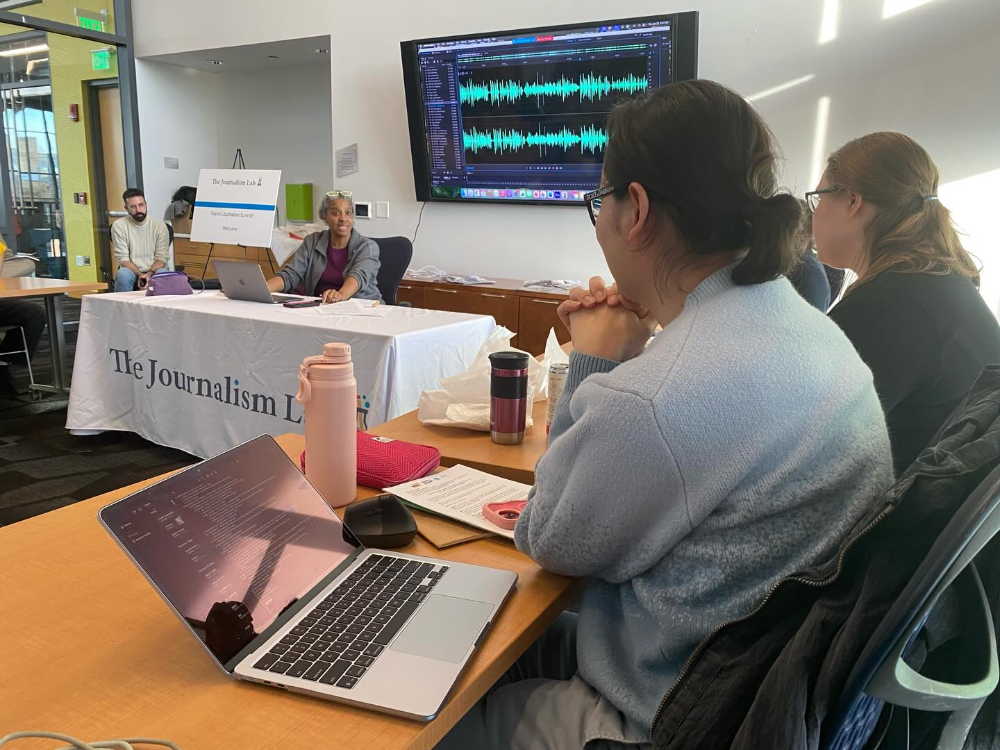
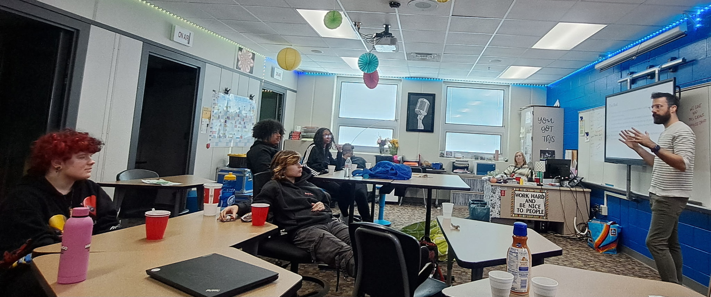
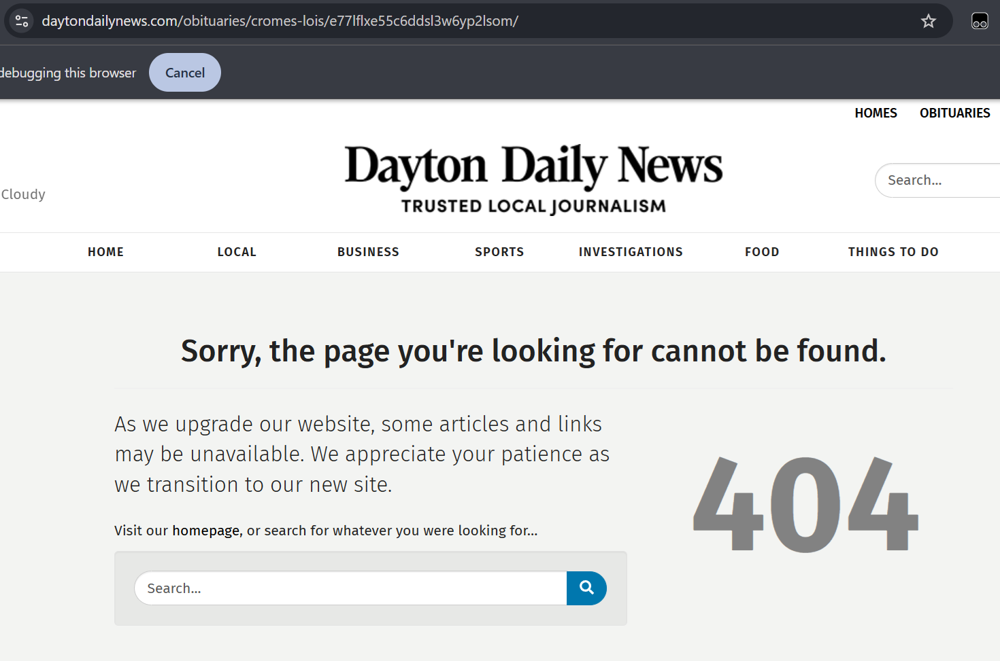

Foreword
This is a proposal, not a plan. Plans for a community should come from the community itself. This comes from just one person who has spent his career listening to this community and believes it deserves better.
What follows is my best synthesis of what I’ve learned as a Dayton native and Dayton Public Schools graduate, as a journalist at the Dayton Daily News, as a co-founder of The Journalism Lab, as a Kettering Foundation Democracy Fellow, and as someone who has watched the information ecosystem that serves this community deteriorate for years. I’m putting it into the world not as an answer, but as a starting point.
Because we need to start right now. Really, we needed to start yesterday, 10 years ago, 50 years ago. I’ve gone my entire adult life as a witness to the gradual downfall of an industry I passionately believe in and value. I’ve sat at many tables where people — myself included — talked about what they thought should be done, but rarely, if ever, believing they are the ones responsible for doing it.
I now realize that I’m the one I was waiting on, to paraphrase Kettering Democracy Fellow Amaha Sellassie’s favorite June Jordan quote.
The federal government will not help us. The state government will not help us. Our neighboring communities will not help us. No one is going to reach down to lift Dayton, Ohio up. We’ve been waiting on help that is not going to arrive. But that’s okay, because we have everything we need right here.
I credit the Kettering Foundation for giving me the time and space to think more deeply about this topic than I ever had the opportunity to do before. I initially set out to write a very different proposal than what you’re reading now. It wasn’t until I was halfway through an early draft, when I was tackling the thorny and immediate concerns about the rise of AI, that I realized I might need to stop writing about an issue I actually knew very little about first-hand. I’d heard from both sides of the extremely polarized discourse that surrounds any discussion of AI today, but I needed to try it for myself. I wanted to know what we are up against.
What followed was eye-opening, alarming, and a little exciting.
This document was developed over the course of several months, through many conversations with friends, colleagues, industry professionals, and others. In full disclosure, it was also drafted in collaboration and iterative dialogue with an AI assistant, Claude. The website you’re reading this on was designed and built through a related tool, Claude Code.
I have no real previous web development or coding experience. I would not have been able to afford to pay a developer or take the time to myself learn the incredibly complicated development languages necessary to prototype the tools and resources below. Through an AI assistant, I created everything you see below in the span of a few short weeks using plain language prompts.
I acquired the dayton.fyi and daytonfyi.com domains because they are, I feel, a perfect, simple distillation of what this project intends to be: Dayton, for your information.
The hands-on experience with new AI tools — not the gimmicky Facebook profile picture generators or a “puffy-coat Pope” doctored image — forced me to rethink what I had assumed I knew about this technology and its implications. My experience led me to explore the seminal work done by Bonnie Nardi and Vicki O’Day, who in their 1999 book Information Ecologies: Using Technology with Heart identified three barriers to thinking clearly about technology: the rhetoric of inevitability, the limitations of partial perspectives, and the effects of metaphor.
I have tried to avoid all three. AI is not a force of nature that we must simply accept or resist. It is a tool — a powerful, consequential, and genuinely dangerous one — and the question is not whether it exists but how we choose to engage with it. We can and should seriously contend with the attendant issues surrounding its development, deployment, ecological and economic hazards, and more. But the choice is ours to make, and making it deliberately, guided by our own values, is better than having it made for us by default.
Nardi & O’Day were insistent that information ecologies are irreducibly local and that you cannot design one from the outside, that the values and practices of a specific community shape what technologies mean and how they function within that community. This proposal is designed for Dayton. Not necessarily as a model to be replicated, but as a demonstration that a community can choose to build its own information infrastructure, on its own terms, using whatever tools serve its values. If it works here, other communities can build their own — and we will be happy to help them learn from our experience.
Full transparency about AI’s role in this work is consistent with the Info District’s own AI policy: a machine does not know Dayton — but we do.
I. An Ecological Framework for Local Information
In 1913, The Great Miami River overwhelmed its banks, killing more than 360 people in what remains the worst natural disaster in Ohio’s history.
Within weeks, this community made a promise: Never again.
What followed was the creation of the Miami Conservancy District, the largest civilian public works project in the world at that time. Not a federal program. Not a state mandate. A local decision, funded locally, owned by the community. Dayton’s forebears looked at a catastrophic failure and built infrastructure so durable that the city has not suffered from significant flood damage since 1922.
The Conservancy District didn’t totally control the water — it built infrastructure so the community could live safely with it, draw from it, test it, monitor it, and fight when someone threatened to contaminate it.
Today, Dayton, along with the rest of the country, faces a different kind of flood. The levees might not have burst, yet, but the cracks are showing and the rain won’t stop.
The Atlanta Journal-Constitution — owned by the same company as the Dayton Daily News — ended its print edition in 2025 after 157 years. The Pittsburgh Post-Gazette, founded in 1786, announced its closure in January 2026. The DDN dropped Saturday print in 2023. The editorial board that shaped civic debate and held elected officials and local institutions to account for generations no longer exists. A Muck Rack and Rebuild Local News report published last year found a more than 75% decline in the number of local journalists since 2002 on average nationally.
It isn’t limited to newspapers, either. Local TV news, once the golden goose of local news markets, is facing a similar crisis. In Toledo, WNWO-TV, the Sinclair-owned NBC affiliate, made headlines when it abandoned locally-produced news in 2023, and many other stations have since dropped or significantly reduced local newsroom budgets.
The commercial model for local journalism is not declining, it is collapsing.
Non-profit and national public media is in no better shape. The Corporation for Public Broadcasting was defunded by Congress in 2025 and formally dissolved in January 2026 after nearly 60 years of bipartisan support. WYSO, our local NPR affiliate public radio station, was dealt a blow when its federal funding was cut, forcing it to rely even more heavily on a donor base that itself is facing a grim, broader economic outlook.
If you applied the IUCN Red List to local journalists as a species, they would land squarely between the Endangered and Critically Endangered thresholds.
A failing media ecosystem that suffers such an enormous loss of human talent and knowledge has immediate, serious consequences for the larger “information ecosystem” of a community: the living, emergent system of how a community knows what it knows.
It is with the urgency of ecological conservation that we should seek to apply this information ecosystem concept first introduced in Nardi & O’Day (1999), Information Ecologies: Using Technology with Heart, to the Dayton region. Nardi and O’Day identified librarians as a “keystone species” in information ecologies — people whose contributions are so central that without them, the ecology becomes unstable. Local journalists play a different but equally critical role: they produce the original civic information that the rest of the ecosystem depends on. When that production collapses, the downstream effects ripple through every other function, from public awareness to government accountability to voter participation.
Critically, AI cannot fill this gap. It can process, organize, and surface patterns in existing information, but it cannot knock on a door, sit through a three-hour commission meeting, or earn the trust of a source. The raw material of local civic knowledge is produced by humans in communities, and no model trained on the internet can replicate it.
AI can accelerate the decline of local media and fragment our communities’ ability to identify agreed-upon truth — or, if integrated thoughtfully into local information ecologies, it can help a small institution perform functions that would otherwise require resources far beyond its reach. The difference depends entirely on who shapes the tools, whose values govern their use, and whether the community those tools serve has any say in the matter.
This proposal is essentially two-pronged:
- To more broadly distribute the critical functions that journalists perform across the larger population, while also ensuring our remaining journalists have the tools and support necessary to operate effectively.
- To build and protect the shared civic record that emerges when professional journalists and engaged residents work within the same local information ecosystem.
Our community should not and cannot wait for the total collapse of its information ecosystem to act. We can proactively build resilience in our local information ecosystem by elevating it to the position of a civic information utility — publicly owned, editorially independent, built to last — that treats this community’s information the way the Conservancy District treats its water: as infrastructure too important to leave to chance.
The Challenges This Proposal Seeks To Address
1. The funding crisis. Arguably the most pressing and the root of everything that follows. Because we live in America, the collapse of the media ecosystem is largely a story of market collapse. American journalism has almost always been a private enterprise. From the explicitly partisan broadsheets of the early republic through the advertising-subsidized daily newspapers of the twentieth century, the production of local news has been a business — often a wildly profitable one. For most of its history, this arrangement worked well enough. Advertising revenue cross-subsidized the civic functions of journalism: the accountability reporting, the city hall beat, the public records work, the deep-dive investigations. The market didn’t fund these things because they were profitable, it funded them because they came bundled with the profitable or fun parts — classifieds, car ads, comics, crosswords, and legal notices.
That bundle no longer exists. The internet unbundled it, and platforms captured the revenue. This is not a temporary downturn or a market correction, it is a permanent structural change.
The nonprofit model — the path that most of the innovation in local journalism has followed over the past fifteen years — is necessary but insufficient. Signal Ohio, with 30+ staff and $15 million raised, relies on philanthropy for 80–85% of its revenue. Houston Landing closed after less than two years despite more than $20 million in seed investment from the American Journalism Project and other major funders. The Wichita Beacon closed in 2024. The pattern is consistent: philanthropic funding is generous at launch, uncertain at renewal, and structurally incapable of providing the stable, recurring revenue that a permanent civic institution requires. Every nonprofit newsroom that has failed in this country has failed for the same reason — not because the journalism wasn’t good, but because the funding wasn’t durable.
This ubiquitous market failure justifies public investment. Not because government should be in the news business — it should not — but because the civic functions that journalism performs are public services that the market can no longer sustain. Public safety is a public good; we fund it publicly. Clean water is a public good; we fund it publicly. Parks, libraries, public health — all public goods, all publicly funded, all operated with varying degrees of independence from the political bodies that authorize their budgets.
And what constitutes a public good has changed over time. Fire protection in American cities was private through most of the 18th and 19th centuries — competing private brigades that would sometimes let a building burn if it wasn’t insured by their company, or fight each other for the right to respond. Private water companies served American cities through much of the 1800s, and the transition to public water was driven by cholera outbreaks and the recognition that private companies had no incentive to serve neighborhoods that couldn’t pay. Libraries were subscription-based and membership-only before Carnegie’s philanthropy and then public levy funding made them universal. The Conservancy District itself was the product of exactly this pattern — flood control was left to private landowners and market incentives until 1913 proved that the market couldn’t protect the community. The transition from private responsibility to public infrastructure wasn’t ideological. It was pragmatic. The community decided that the function was too important to leave to the market.
The two-tier structure of this proposal reflects this conviction and offers multiple pathways, at different funding levels, to support a healthier information ecosystem.
2. The collapse of trusted, local information and the rise of misinformation. When credible local information disappears, the void doesn’t stay empty. It very quickly fills with rumor, algorithmically amplified outrage, misinformation that confirms what people already fear, and with disinformation deliberately engineered to exploit communities that no longer have a shared factual foundation. Springfield is the case study that happened here, in Ohio, in 2024: debunked claims about Haitian immigrants amplified nationally, triggering more than 30 bomb threats to schools and government offices, in a community whose local journalism infrastructure, despite admirable efforts from the staff of the Springfield News Sun, was insufficient in the face of the deliberate misinformation spread by powerful national figures and their platforms. (Unfortunately, due to a CMS migration, the Springfield News Sun coverage is currently inaccessible and it is unclear if it will be restored.) But Springfield is the dramatic example. The quieter, more corrosive version happens daily: in neighborhoods where residents have no reliable way to distinguish a legitimate development proposal from a predatory one, where a social media post about a city commission decision circulates without anyone with institutional knowledge to confirm, correct, or contextualize it. The information ecosystem doesn’t degrade into silence, it degrades into something more pernicious: noise. And the people most vulnerable to that noise are the people who were least served by the commercial model to begin with.
3. The access and equity gap. The information ecosystem’s collapse does not affect all residents equally, and the systems that preceded it were never designed to serve the whole community in the first place. The commercial model served the portion of the community that advertisers wanted to reach. Coverage of everyone else was a byproduct, not a commitment, and when the model collapsed the byproduct disappeared first. What remains is stratified by access: seniors who rely on print lose their primary information source when papers cut days or cease publication. Residents without reliable internet are locked out of digital-only alternatives. Non-English speakers are excluded from public documents that are never translated. Low-income neighborhoods that were already underserved are the first to become true information deserts, places where the answer to “what is my government doing?” is functionally unknowable.
4. The public records gap: transparency without accessibility. Ohio law establishes that government records are public. It does not ensure that they are accessible in any meaningful sense. The reactive model — you request, the agency responds — serves journalists, lawyers, and activists who know what to ask for. It fails the resident who cannot request records they don’t know exist. And even when records are obtained, they arrive in formats designed for institutional use, not public comprehension: 500-page budgets, dense zoning codes, contracts buried in filing systems that predate the internet. The information is technically public. It is not, in practice, available. This gap means the raw material that informed civic judgment requires — the contracts, the votes, the spending decisions, the abatement agreements — sits behind a moat of procedural knowledge and institutional literacy that most residents cannot cross.
5. The threat to democracy. When residents cannot find out what their government decided last week, when voters enter a booth — assuming they decide to exercise their right to vote — with no idea who the candidates for city commission are, when a neighborhood doesn’t know that an LLC has been buying every other house on the block, when a policy proposal is voted on before any independent analysis exists or its consequences are fully understood and debated — democracy becomes performative. Elections still happen, the meetings are held, the comment periods open and close, but the substance drains away because the informed public judgment that democracy requires has no informational foundation to rest on. Every empirical study of the local news crisis confirms this: when local journalism disappears, fewer people vote and fewer people run for office, municipal borrowing costs rise, government spending becomes less efficient, and corruption increases.
A Tiered Funding Approach
Given these challenges, what are our community’s options for future sustainable models for news and information that both grows out of and supports inclusive democracy?
This proposal offers a two-tier structure: one immediately actionable, and one that represents a broader, enduring vision.
Tier 2 is what we can build right now. A nonprofit civic information platform, operated by The Journalism Lab, an existing Dayton 501(c)(3) with nearly six years of demonstrated community journalism work. No legislation required. No levy. No government authorization. A Community Voice Network that cultivates and amplifies independent writers and thinkers across the region. A community documentation network that trains and pays residents to attend and document public meetings. A consolidated public meetings calendar. Civic AI tools that make dense public documents accessible in plain language. A searchable archive of public records. Citizen journalism training, including youth programs. And dayton.fyi as the platform that connects it all.

Tier 2 is not a fallback, it’s the foundation. It is the working institution that Dayton’s residents can use, evaluate, and critique before anyone asks them to vote on anything.
Tier 1 is the aspiration. A voter-approved ballot initiative for the November 2027 general election, creating a publicly funded Information District with dedicated levy revenue, proactive public records disclosure mandates, a governance structure written into law, and a small professional newsroom focused on accountability. Modeled on the successful passage of Issue 9, which proved that Dayton voters will support creative use of the ballot initiative for community infrastructure.
Tier 1 cannot succeed without Tier 2 existing first, but Tier 2 is valuable on its own. If the ballot initiative never happens — if the legal analysis comes back unfavorable, if the community says no, if the political window closes — the nonprofit platform still serves Dayton.
Tier 1 also serves a structural purpose beyond funding: it creates the durable civic institution that lifts this work off the shoulders of any single organization or individual. The Journalism Lab is the scaffold. Tier 1 is the building. If Tier 1 is approved, the transition is a clean separation: the Community Information Board becomes a new, independent public entity, and The Journalism Lab returns to its original role as an independent nonprofit. The Lab does not become a quasi-governmental body. It goes back to doing what it does today — training community members in journalism skills — as one of many organizations the Info District partners with.
II. Influences and Precedents
This proposal incorporates frameworks from multiple sources. Little, if anything, proposed is genuinely novel, but its holistic approach and execution would be. It’s important to identify, credit, and explain the invaluable work we are building upon:
Read the U.S. Info District Guide →
The J+D Lab identifies eight acts of journalism that any community member can perform: facilitating, documenting, commenting, inquiring, sensemaking, amplifying, navigating, and enabling. This proposal adopts that framework and extends it with one additional act that reflects the specific needs of Dayton’s information ecosystem: preserving.
Preserving names something the original framework implied but didn’t make explicit: the commitment to ensuring that what a community knows about itself is durable, searchable, and publicly owned, not locked behind a paywall or lost when a newspaper folds or a platform changes its terms of service. It also encompasses the act of capturing and elevating lived experience, particularly from community elders and others whose testimony might otherwise go unrecorded. The genealogical archive, the community milestones registry, the Community Voice Network — these serve the preserving function directly.
In Nardi and O’Day’s framework, a healthy information ecology depends on diversity: multiple species filling multiple niches, adapting to each other and to their local environment. Twenty years ago, most of these niches were filled by one species: professional journalists. That concentration was always fragile. Now that the keystone species is in collapse, the niches don’t disappear. They just go empty. The Info District’s design applies the principle of functional redundancy: distributing these critical functions across journalists, trained community documenters, independent contributors, civic technology, and the residents themselves. Not one species, but an ecosystem.
Information
Ecosystem
III. What An Information District Could Do
This section will try to explain the full vision of what the Information District can do as a civic information utility. Not every function would launch on day one and not every function may prove necessary or valuable to the community. These capabilities are also all interconnected: they share data, feed into one another, and become more valuable in combination than in isolation.
This section is organized in four layers: the capacity that strengthens the community, the infrastructure that makes the work possible, the editorial functions that produce original journalism and analysis, and the channels that deliver it all to residents.
The Capacity Layer: How the Community Gets Stronger
These are the education and training investments in the community’s ability to participate in its own information ecosystem. These center the residents as the critical resource for everything else that follows in the system.
Citizen journalism training — the Journalism Lab’s core function. Training community members to tell their own stories and hold their own institutions accountable.
Youth journalism programs — partnerships with Dayton Public Schools and area higher education institutions. In June of 2025, The Journalism Lab worked with a Meadowdale sophomore to help her publish her investigation into school busing issues in Teen Vogue, demonstrating the strength of the concept.

Media and AI literacy education — most civic institutions that use AI don’t help their communities understand AI. The Info District should. This means programming through the Journalism Lab that teaches residents how AI tools work, what their limitations are, and how to evaluate AI-generated information they encounter anywhere, not just on Dayton.FYI. It means age-appropriate AI literacy integrated into youth journalism programs. It means targeted programming for communities most vulnerable to AI-generated misinformation, particularly immigrant communities that may encounter AI-generated content in languages where fact-checking resources are scarce. And it means the Info District modeling the transparency it advocates: publishing an annual AI transparency report that details what AI tools were used, for what purposes, what errors were identified, and what changes were made as a result.
Community education about civic process — demystifying how government works, how to participate in public meetings, how to file public records requests, how to apply for appointed boards. The Documenters program is itself the most powerful version of this: a paid, structured, supported first experience with civic participation.
The Infrastructure Layer: What Makes the Work Possible
These are the systems that collect, organize, and make accessible the raw material that journalists, analysts, Documenters, and residents use.
Public Records Library and Proactive Disclosure
This contains open questions ahead of implementing. Due to the ambitious scope of this function, it is broken into two stages that correspond to the funding tiers described earlier:
In Tier 2: the library would consist of an aggregation of public records that are already publicly available but not consolidated or easily navigable — city contracts, property transfers, building permits, zoning decisions, etc. These are records that are obtained through standard records requests, organized geographically, made searchable. (The City of Dayton has a relatively transparent portal for these requests — how this is incorporated, as well as records from other agencies and bodies that fall under the “local” jurisdiction, remains an open question.)
In Tier 1: a proactive disclosure mandate, as part of the 2027 ballot initiative, would require city agencies automatically publish public records without individual records requests. Records covered include: all city contracts over $10,000 (full text, vendor, amount); all use-of-force incident reports (non-restricted fields); all property tax abatement agreements; all TIF district financial reports; all commission voting records and meeting minutes; all budget amendments; all zoning variance decisions; all city employee salary and overtime records; all building permit issuances above a value threshold; all competitive bid results and sole-source justifications. This is an operationally demanding ask for any agency, and a phased implementation would be necessary to allow the proper technical implementation. All proactive disclosure is subject to the data governance principles described in Section V.
| Record Type | Current Status | Notes |
|---|---|---|
| Commission voting records and meeting minutes | Published | AgendaCenter — full minutes with roll-call votes |
| Budget data (department-level) | Partial | OpenGov portal — department-level budgets and expenditures; mid-year amendments embedded in meeting minutes only |
| Use-of-force incident reports | Partial | Police Transparency Portal — aggregate dashboards; incident-level data not yet available |
| Zoning variance decisions | Partial | Decisions in BZA meeting minutes, but no searchable database by address or parcel |
| Building permit issuances | Partial | Status lookup tool exists, but no browsable feed or downloadable dataset |
| Competitive bid results | Partial | Bid postings listed; award results and sole-source justifications not published |
| City contracts over $10,000 | Not published | Requires records request |
| Property tax abatement agreements | Not published | Requires records request |
| TIF district financial reports | Not published | Ohio law requires annual reports; not posted online |
| City employee salary and overtime records | Not published | Third-party sources (DDN Payroll Project) publish via records requests |
Open API
All the data collected by the Info District should be made available through a public API, free of charge. Other news organizations, researchers, app developers, and community organizations can build on the Info District’s data without permission, for free. Data containing personal identifying information is subject to the privacy rules and guidelines outlined in Section V.
AI-Powered Infrastructure
Conversational Document Assistant. A working interface where any resident can ask questions of dense public documents — the city budget, the zoning code, a TIF district agreement — in plain language and receive sourced, cited answers. “How much did the city spend on sidewalk repair?” answered with the relevant line item and page number. Individual query data is not retained in a manner that links questions to individuals — the tool serves the resident, it does not surveil them.
Pattern Detection. AI systems continuously scanning the public records database for patterns that humans would miss due to volume — contracts sharing a registered agent, permit spikes correlated with TIF approvals, statistical anomalies in use-of-force data. The AI surfaces potential red flags. Humans investigate.
Automated Translation. Translation of public documents for non-English speakers. While some agencies and organizations already offer some translation services and individuals can use their own translation tools and resources, there are significant gaps in our public document accessibility that exclude sections of our community.
Five Tools for Residents
These tools share a common data layer and continuously reference each other. Together they provide the permanent, nonpartisan, structured information layer that makes every resident’s civic judgment better informed. The full set is the aspiration; Tier 2 begins with the Civic Calendar and elements of the Civic Map, expanding as resources allow.
1. Civic Calendar. A comprehensive calendar tool to track meeting times, election and registration dates, as well as key deadlines for surveys, petitions, applications and public comment periods, all filterable and sortable based on geography and interest. The resident can sign up for automated alerts tailored to their expressed interest areas and geography. A hyper-local example of what is possible: “The zoning board hears a variance request for a property two blocks from you on Thursday. Here’s what’s being proposed.”
2. Civic Map. Connecting relevant data to a visual geography. Toggleable data layers that could overlay an interactive map of a neighborhood could include: property transfer records, building permits, code violations, the elected officials representing that area, polling locations, and Community Milestones. These maps could potentially integrate with asset-mapping initiatives that can clearly identify community assets: organizations, institutions, gathering spaces, and service providers. Map data must be carefully balanced against privacy needs: the data governance principles in Section V govern what the map displays and how.
3. Policy Evaluator. How residents will be able to interact with the independent policy analysis function, which includes published analyses of significant proposals, fiscal impact summaries, comparable city research, and more. This tool could also surface data not just from local governmental bodies, but state and federal policies that specifically name Dayton or its neighborhoods.
4. Accountability Tracker. A tool fed by both public records and Documenter-gathered data that tracks voting records, attendance, campaign funding and more for all locally elected officials, categorized by topic. The tool could collate public statements on major issues along with citations for each. Ahead of each election, term summaries could display the most consequential votes and major positions taken by the incumbents, as well as a structured profile built from public records. The tool would give down-ballot visibility: a resident could enter their address, see every race they’ll vote in, with candidate profiles, issue summaries and incumbent records linked and appropriately sourced.
| Date | Item | Topic | Vote |
|---|---|---|---|
| Mar 18 | Downtown West TIF District | Development | Yes |
| Mar 4 | Police oversight board funding | Public Safety | Yes |
| Feb 18 | Sidewalk repair bond issuance | Infrastructure | Yes |
| Feb 4 | Third-party waste hauler contract | Services | No |
| Jan 21 | Zoning variance — 500 block E. Fifth | Zoning | Yes |
| Jan 7 | Emergency shelter expansion | Human Services | Yes |
5. Community Action Pipeline. A monitoring dashboard that turns community experience into structured, actionable input that can later develop into real policy. Documenter notes, identified neighborhood patterns (via AI pattern recognition), community forum outcomes, and public records synthesized into policy briefs when systemic issues emerge. If a drainage problem is documented across multiple meetings, a single LLC is connected to a cluster of code violations, or a service gap is identified through multiple testimonies, this dashboard flags the potential problem and gives it the analytical backbone it needs to be addressed through policy. The Info District is not and should not lobby or tell the City Commission what to decide, but it should ensure that community knowledge enters the policy process with rigor and structure. Crucially, this pipeline allows residents to watch the full life cycle of an issue being addressed and should be used to feed year-end summaries of accomplishments that can later be used as tracked metrics of success.
Community Milestones Registry
A free, permanent, publicly searchable record of community life across its full arc — births, graduations, marriages, military service, retirements, community achievements, business openings, and deaths. Newspapers once served as the chronicle of a community’s key celebrations of life and acknowledgements of death, functions that newspapers have shed or that have splintered off into other, private enterprises. Their loss is one that will be felt acutely by future historians and documentarians. Returning these Daytonians’ important life milestones to the public record will re-center the idea that these stories should be owned by the community and are not reserved for only those who can afford hundreds of dollars for an obituary in a newspaper or funeral home, where data security and archival processes are questionable at best. Milestones are voluntary and submitter-controlled. Families and individuals choose what to share. Removal requests are honored.

Below Lois’ high school yearbook photo it said, “Her smile describes her.” And that was true her entire life. She loved life, her family, her friends and co-workers. She made friends quickly and kept them forever.
Lois was the eldest of six children, born in West Virginia in 1935. She moved to Dayton after high school and got a job as a phone operator at Ohio Bell. She met Robert Cromes at a roller skating rink and they married in January 1957. She went on to work at Sears as a Telex operator and then as a cashier for more than 30 years.
Lois and Bob were married 50+ years until he passed in 2013. They lived in the same house which they bought new in 1957.
She was a people-magnet, meeting and making friends no matter where she went. She spent her senior years as a volunteer at Children’s Medical Center at the information desk, greeting and guiding countless families.
Election Results Archive
Precinct-level election results, permanently archived, mapped geographically, searchable across election cycles. How did your precinct vote on Issue 9? How has turnout in your neighborhood changed over the last four cycles?
The Editorial Layer: What the Organization Produces
These are the functions that require editorial skill and institutional commitment. Everything else either feeds into these or distributes what they produce.
Newsroom
A funded, independent newsroom would distinguish the Info District from a data platform. It is small by design: 2–4 journalists in Tier 1, but intended to scale as funding resources allow (grants, philanthropy, a larger levy ask, etc.). It would be primarily focused on accountability reporting that no other function in the system can perform: Documenters can record what happens at a public meeting, the Community Voice Network can debate what it means. Civic AI can surface patterns in the data, but when those functions reveal that something is wrong and worth deeper investigation, someone has to make phone calls, knock on doors, file targeted records requests, and write the story. That’s the role of the newsroom staff.
The newsroom is not intended to cover breaking news and does not duplicate the work of the Dayton Daily News, WYSO, or any other local outlet. Its editorial focus is structural accountability. However, breaking news events are among the most dangerous vectors for misinformation, as Springfield learned in 2024, and the Info District should not be silent when false claims circulate about Dayton. Rather than competing with existing media to report events first, the Info District can offer a rapid verification function: when a claim about a local event spreads, the newsroom draws on the Info District’s data layers, records access, and Documenter network to publish a sourced, factual summary establishing what the public record shows. This would solely include verified facts that every other outlet, and every resident, can rely on, and would not be published without a very high degree of confidence in its sourcing. If done well, existing media may come to see this as a sourcing tool rather than competition. This distinction between verification and coverage should be pressure-tested during the community engagement process and with feedback from existing local media partners.
Coverage decisions are made by the City Editor, who has full editorial authority independent of the Community Information Board (see Governance). All newsroom content is published on Dayton.FYI and licensed CC BY 4.0.
Independent Policy Analysis
When a significant policy proposal comes before the City Commission, the Dayton Public Schools board, or another tracked government body, the Info District publishes an independent, nonpartisan analysis: what the proposal does, what it costs, who benefits, who bears the cost, what assumptions it relies on, and what comparable cities have experienced. This analysis is published before the vote, ensuring that residents and officials have access to an evaluation that was not produced by the proposal’s chief advocates or by staff who report to the body voting on it.
Today, public agendas for the Dayton City Commission are made available on Monday for a Wednesday vote and are frequently hundreds of pages long. No resident, and few commissioners, can meaningfully evaluate that volume of material in 48 hours. Independent analysis published in advance of a vote, in accessible language, changes who can participate in the process.
No equivalent exists at the municipal level in most American cities. The Info District functions as a local Congressional Budget Office, providing the independent analytical capacity that informed democratic decision-making requires.
Consider what happened with ShotSpotter. In 2019, the Dayton City Commission approved a $205,000 contract for gunshot-detection technology deployed across a three-square-mile area of predominantly Black northwest Dayton. No independent cost-benefit analysis, equity impact assessment, or review of the growing national research questioning the technology’s effectiveness was made available to the public before either vote. In November 2020, the commission voted 4-1 to extend the contract for $390,000 more, the day before Thanksgiving, over Zoom, without public comment, despite a petition with hundreds of signatures opposing it. The first real data investigation came not from the city but from WYSO, a full year after the extension vote: fewer than 2% of ShotSpotter alerts in Dayton resulted in an arrest. The city eventually let the contract expire at the end of 2022, after spending roughly $595,000. An independent policy analysis available to the community before either vote, with national data, local effectiveness metrics, and comparable city research, could have changed the outcome.
In Tier 2, this is lighter — plain-language explainers sourced from public documents. In Tier 1, a dedicated policy analyst produces full independent fiscal and policy analyses.
Community Documentation Network
A Documenters-style program that trains and pays community members to attend and document public meetings. This is the highest-volume civic data collection function and the raw material for much of what the rest of the system produces.
The Info District would support and integrate with the national Documenters Network if it extends to Dayton. If the network does not arrive, the Info District develops an equivalent local program independently. Either path results in consistent, structured, paid community documentation of public governance.
Documenters record not just narrative notes but structured data: who was present, what motions were made, how each official voted, what the outcome was. This structured data feeds directly into the Accountability Tracker.
Community Voice Network
The Information District produces data, analysis, and accountability reporting. But democratic life does not run on data alone. Between the public record and public judgment sits a crucial interpretive step some might mistake for noise or uncomfortable arguing — the space where residents debate what the facts mean, what the community should value, and what kind of city Dayton ought to become. That step is not a supplement to civic infrastructure, it is the reason civic infrastructure matters, and how we handle that step can lead to improved democratic outcomes.
The Community Voice Network is a hub-and-spoke publishing model that cultivates, connects, and amplifies independent community contributors across the Dayton region. The hub — Dayton.FYI — curates and presents the strongest community writing, audio, and visual work from a growing network of independent contributors, each publishing on their own platforms and building their own audiences. The hub selects, contextualizes, and spotlights what the spokes create. These independent contributors — residents, neighborhood leaders, subject-matter practitioners, retired professionals, students, organizers, artists — publish on topics they know and care about. Contributors maintain editorial independence over their own work. They are not Info District staff, they are community voices that the Info District’s editorial team identifies, develops, and connects to a broader audience.
The hub editorial function operates on three tracks. First, discovery and development — actively seeking voices that aren’t already in the conversation, not because they lack perspective but because they lack platforms: A retired city engineer who understands stormwater infrastructure; a home-health aide who sees the gaps in the elder care system; a DPS parent navigating special education bureaucracy; a religious leader bridging immigrant communities and city services. The Info District finds these voices, offers basic publishing support and training through the Journalism Lab, and helps them reach an audience.
Second, curation and presentation. The hub selects from across the network — prioritizing rigor, specificity, lived expertise, and good faith over ideology. The editorial standard for inclusion is not agreement, it is need and proximity to root causes. Contributors who engage substantively with evidence, who argue from experience, and who treat their neighbors as worthy of persuasion rather than contempt earn inclusion in the platform.
Third, connection and context. When the Info District publishes an accountability investigation or a policy analysis, the hub invites network contributors to respond — not as a checked-box requirement feigning as community engagement, but as important perspectives presented alongside the institutional work. The network’s opinion and the institution’s evidence reinforce each other. The argument becomes richer because the facts are accessible. The facts become relevant because people are arguing about them.
The Community Voice Network is not the Info District’s opinion. The institution’s editorial voice — expressed through its policy analyses, its ballot language translations, and its accountability reporting — remains nonpartisan, evidence-based, and neutral. The community voices it platforms are free to argue, advocate, and take sides. Contributors are clearly identified as independent community voices, not Info District staff or representatives.
Preserving carries particular weight in this network: when a returning citizen writes about navigating reentry; when a family publishes the story of a grandparent whose life was never recorded in the paper of record; when a neighborhood elder documents what was lost to urban renewal. These should not be historical footnotes, but living testimony. This is how the Info District serves communities whose stories have been systematically excluded from Dayton’s information ecosystem: not by telling those stories for them, but by building the infrastructure that lets them tell their own, and ensuring those stories endure.
In Tier 2, the Community Voice Network is the Journalism Lab’s most scalable editorial function. The infrastructure cost is near zero — contributors publish on Substack or equivalent platforms at no cost to the Info District. The editorial lift is curation, not production. For the period between Tier 2 launch and any potential ballot initiative, the network is likely the primary driver of community visibility, audience growth, and emotional investment in the project.
In Tier 1, the network grows alongside the professional newsroom. The hub editorial curation function becomes a defined staff role. Stipends or per-piece payments become possible for contributors whose work meets publication standards, following the Documenters logic — community members doing civic work deserve to be paid for it.
The Distribution Layer: How It Reaches People
The information the Info District produces is only valuable if it reaches the people who need it. These distribution channels are designed to meet residents where they are, across digital, print, and in-person formats as part of the Info District’s commitment to digital equity.
Dayton.FYI — the primary web platform, organized geographically (neighborhood as primary navigation, not chronological feed). Every piece of content linked to pertinent, related items with source transparency throughout.
Neighborhood email digests — segmented by geography and topic. A weekly email for your specific area: milestones this week, the next neighborhood meeting with agenda, building permits issued on your block, a property that just sold, the nearest Documenters-covered meeting.
SMS civic alerts — high-priority items and opt-in only: public comment deadlines, emergency civic information, election reminders. A reliable way to reach low-income residents or those who otherwise lack reliable internet access.
Print digest (Tier 1) — weekly via USPS Every Door Direct Mail, reaching residents without internet access and to meet the needs of those who might find themselves losing access to a regularly printed local news, should the DDN cease print operations. Costs for printing and distribution are discussed later, and are not insignificant, but a weekly (or bi-weekly) replacement of a Sunday paper that summarizes the most important news and updates of the week, in addition to giving a calendar of upcoming events and civic deadlines, remains one of the most durable and time-tested tools of modern journalism. Like the SMS messages, this is a commitment to equity: the information commons serves the whole community, not just the internet-connected or digitally savvy portion.
IV. AI Policy
Why does the Info District use AI at all?
Because a nonprofit with extremely limited resources cannot offer conversational access to a 200-page collective bargaining agreement, translate public documents into six languages, or scan thousands of public records for patterns without it. AI is what makes a small institution capable of performing functions that would otherwise require a staff of fifty. It extends the reach of human effort — but only when the humans remain in control of the judgment, the values, and the editorial decisions that give that effort meaning. But AI is a tool that operates on information produced by humans in a community — it can process, organize, translate, and surface patterns in that information, but it cannot produce the judgment, the relationships, the local knowledge, or the editorial discretion that civic journalism requires. The line between what AI does and what humans do is not a technical distinction. It is an editorial and ethical commitment.
In a region where data centers have drawn opposition, where AI is associated with job displacement, and where trust in institutions is already fragile, the Info District’s AI usage will be and should be scrutinized. This policy exists to make that scrutiny productive rather than paranoid — to give residents, board members, and critics a concrete standard against which to evaluate every AI-assisted function the Info District operates.
The policy entails a four-level disclosure framework:
Absolute Prohibitions
Self-Governance Mechanism
AI is developing at a break-neck pace. Who decides when a new AI use case is appropriate? A policy should establish that the City Editor has authority over AI usage in editorial functions, subject to the disclosure framework. New categories of AI use that don’t fit the existing four levels require board review — not for editorial approval (which the firewall prohibits) but for policy compliance. And the annual AI transparency report, published by the City Editor, serves as the public accountability mechanism.
V. Data Governance: Privacy as a Civic Commitment
The Information District is built on the premise that what Dayton knows about itself should belong to Dayton. But that principle has a necessary corollary: not everything known about individuals belongs to the public. Transparency and privacy are not opposites. They are complementary obligations that a civic information institution must hold in constant, deliberate tension.
The Info District does not need to invent a framework for navigating that tension. Decades of work by organizations that have confronted exactly these questions — the Sunlight Foundation’s Open Data Policy Guidelines, the Urban Institute’s National Neighborhood Indicators Partnership data governance framework, the Reporters Committee for Freedom of the Press, and Ohio’s own public records jurisprudence — provide robust, tested principles. The Info District adopts and adapts these principles rather than building from scratch.
Institutional Transparency vs. Personal Privacy
The Info District’s transparency mandate is directed at institutions, not individuals. The operative question for every piece of data the Info District collects, publishes, or makes searchable is: does this information illuminate how public power is being exercised, or does it expose private details about a person’s life?
Institutional transparency means that public contracts, government spending, official votes, policy decisions, and the exercise of public authority should be proactively disclosed, permanently archived, and fully searchable. This is the core of the proactive disclosure mandate. The public has a right to know what its government does with its money and its power.
Personal privacy means that the Info District does not aggregate, republish, or make newly searchable personal information that could expose individuals to harassment, discrimination, or physical danger — even when that information is technically part of the public record. The fact that a piece of data is legally accessible does not mean that making it easily searchable at scale serves the public interest.
The Aggregation Problem
The Sunlight Foundation’s Open Data Guidelines identified what privacy researchers call the “mosaic effect”: datasets that are individually harmless can become identifying or dangerous when combined. A building permit, a property transfer, and a code violation are each innocuous public records. Mapped to a single address and linked to an owner’s name, they become a surveillance tool.
The Info District will publish each of these record types. It must therefore make deliberate decisions about how they are presented — what is linked, what is searchable by name, and what is displayed only at the aggregate or geographic level. The default should be the minimum level of personal identification necessary to serve the public interest purpose of each dataset.
Specific Commitments
What This Section Does Not Do
This section establishes principles and commitments. It is not an exhaustive data governance policy. A complete policy — including specific data classification standards, retention schedules, breach notification procedures, and a formal review process for new data types — will be developed during the community engagement process and refined before Tier 1 launch, drawing on the frameworks cited above and on legal counsel. The community engagement process should specifically surface community perspectives on privacy: residents will have views on what information about their neighborhoods, properties, and civic participation they want to be publicly accessible and what they do not.
The Conservancy District metaphor applies here, too. The levees do not exist to stop the water from flowing. They exist to ensure it flows where it should and doesn’t flow where it would cause harm. Transparency without privacy is a weapon. Privacy without transparency is a shield for the powerful.
VI. Where This Belongs In the Community and Key Partnership Opportunities
The Information District does not replace or compete with existing media outlets such as the Dayton Daily News, The Dayton Weekly News, or WYSO. It is not a government communications office. It is not adversarial to local government — accountability and opposition are not the same thing.
Everything the Info District publishes is free. Everything is licensed CC BY 4.0 — meaning DDN, WYSO, bloggers, neighborhood newsletters, and anyone else can republish it with attribution, at no cost. The Info District is connective tissue for Dayton’s media ecosystem, not a competitor within it.
The Info District should also not duplicate efforts of existing agencies or organizations in Dayton. Wherever possible, it should extend this metaphor of “connective tissue” by bridging services and raising awareness of the excellent work already being done. Below are some potential community partnerships to explore:
Ombudsman Office: The Dayton-Montgomery County Ombudsman has been operating for 55 years — it’s one of the oldest in the country, predated only by Hawaii and Nebraska. It investigates complaints about government agencies and services for residents. It already does several things the Info District needs: It surfaces systemic patterns from individual complaints (the Community Action Pipeline function). It publishes a regular column in the DDN translating government process into accessible language (a sensemaking function). It partners with the Dayton Metro Library to host public sessions where residents can bring government-related problems. And when the DDN disappears or further diminishes, the Ombudsman loses a key channel for reaching the public. The Info District becomes a potential new distribution infrastructure in addition to an operational partner.
The Dayton Metro Library: Libraries are without question the closest existing analogy to what we’re proposing — publicly funded, levy-supported, editorially independent information infrastructure serving the whole community. Since libraries are and have been so critical to information ecosystems — Nardi & O’Day’s “keystone species” is a librarian — there’s an underlying, open question of whether or not this proposal deserves to live within the existing library network. The library system already has the physical distribution network and levy funding, but asking the system to host and maintain something of this magnitude would be a huge, unrealistic ask at this point. A partnership, however, makes a world of sense, given the mission alignment and deep, physical connection to our communities.
Higher Education Institutions: Sinclair Community College, The University of Dayton, Wright State University (though beyond the geographic scope) are natural partners for several of this proposal’s functions and missions. Info Districts could simultaneously tap into and revitalize local journalism and media programs, while AI research wings could help develop a more robust, locally hosted LLM solution that would be less dependent upon frontier models for sustained use.
The City of Dayton’s Community Engagement Division: Democracy Fellow Mike Squire and his staff already do an admirable job stewarding and coordinating with the City’s 65 different neighborhoods. An Info District would be an asset for them to stay better informed and civically empowered and educated.
DATV: An underappreciated community asset, the station was created by Roxie Cole, who was passionate about providing underserved communities a way to use their voices. This founding mission is essentially the Community Voice Network’s mission stated forty years earlier.
Eichelberger Center For Community Voices: Created with a similar mission, the Center amplifies local voices and encourages community storytelling in a tradition this proposal embraces and should support.
VII. Budget
Section III describes the full range of what the Information District can build. The vision is deliberately broad because these capabilities are interconnected. But the honest answer to “can you do all of this?” is: it depends on what the community is willing to pay for and how clearly we can demonstrate the value of the offerings.
| Line Item | Annual Cost |
|---|---|
| Personnel: 4 co-founders at $42–48K | $168–192K |
| Documenter assignments: 75–100/yr at ~$40 each | $3–5K |
| Physical space: coworking or lease (4–6 people) | $10–18K |
| Technology: hosting, database, AI API, email, SMS | $5–8K |
| Insurance, accounting, legal compliance | $8–15K |
| Events, workshops, and student stipends | $10–25K |
| Development/fundraising capacity | $15–25K |
| Line Item (beyond Tier 2 base) | Annual Cost |
|---|---|
| Newsroom: 2–4 journalists at $45–65K + benefits | $130–340K |
| Policy analyst at $55–75K + benefits | $70–100K |
| City Editor at $70–90K + benefits | $90–115K |
| Operational staff (data, community engagement): 2–3 | $100–180K |
| Expanded Documenter program: 200+ assignments/yr | $8–12K |
| Voice Network contributor stipends | $10–20K |
| Technology at scale: AI API, Open API, enhanced hosting | $15–30K |
| Community Milestones Registry: archival infrastructure | $5–15K |
| Print distribution (monthly EDDM to ~60K households) | $155–240K |
| Legal memo establishing public purpose (one-time) | $10–20K |
| Institutional transition & board establishment (one-time) | $5–15K |
Funding Alternatives
The 1-mill property tax levy is the recommended vehicle, but it is not the only option, and the community engagement process should evaluate alternatives seriously.
VIII. Governance: The Community Information Board
As with all elements of this proposal, this is subject to community input and scrutiny. It felt apt, however, to ground the governance model in Dayton’s own civic innovation: the council-manager form of government that Dayton pioneered in 1913 — the same year as the flood, the same period of civic reinvention. The model separates policy authority (the board) from operational management (the City Editor), adapted for editorial independence.
Appointees (2)Community members, not commissioners
Neighborhoods, faith, civic orgs
Ombudsman or designee
Rotating
demographic representation
The City Editor
Appointed by majority board vote. Full editorial authority over all published content, including Community Voice Network curation standards. Serves as non-voting ex officio board member. Publishes an annual editorial transparency report.
Removable only for cause — financial misconduct, ethical violations, demonstrated incompetence, as defined in the charter. Not at the board’s political pleasure. An editor who can be fired without cause will self-censor on stories that might upset board members.
Editorial Independence Firewall
The board may not: direct, review, approve, or veto any editorial content before publication; direct coverage of or suppression of coverage of any person, organization, or topic; access unpublished materials, source identities, or editorial deliberations; make public statements purporting to represent the Info District’s editorial positions. Violation constitutes grounds for board member removal.
Conflict of Interest
No current city employee or elected official may serve. Board members must recuse from votes involving affiliated organizations.
IX. Legal Architecture
A municipal property tax levy is the primary legal vehicle to create a publicly funded Information District. This would involve a ballot initiative via citizens’ petition pathway as outlined in Ohio Constitution Art. 12, Sec. 2. The organization’s governance would be established through a connected Home Rule ordinance.
However, no Ohio court has ruled on whether community journalism constitutes a “public purpose” sufficient to support a property tax levy. Issue 9 (2025) and Preschool Promise (2016) established both legal and political precedent for using tax mechanisms for novel public purposes. Arguments from library funding (ORC Chapter 3375), public broadcasting, and the broad construction Ohio courts have given to home rule authority suggest viability, but real legal counsel must be consulted ahead of any implementation effort. A legal memo establishing public purpose should be commissioned by early 2027.
Proactive Disclosure Limitations
A ballot initiative can mandate automatic, proactive publication of non-restricted public records, but it cannot expand body camera disclosure beyond ORC §149.43 categories. Body camera litigation could proceed through a separate mandamus program, in partnership with local legal resources such as ABLE or the University of Dayton School of Law. Proactive disclosure mandates are subject to the same exemptions ORC §149.43 already recognizes because the mandate expands the delivery mechanism, not the definition of a public record. The data governance framework (Section V) provides additional privacy principles governing how disclosed information is stored, published and presented.
X. Measuring Success
This proposal includes a number of bold, ambitious efforts all designed to strengthen our city’s information ecosystem. All of its proposed tools, organizational elements and resources should be measured against how effectively they will help us achieve the goal of being the “best-informed city in the country” by 2030. We should settle for nothing less, while also realizing that this proposal alone will be but one small piece of a collective effort to make our local information ecosystem more resilient and responsive to the needs of its residents.
Rather than settled metrics at this stage, the following represents options for tracking. Community input should ultimately agree upon what metrics should be used to determine the success or failure of the Info District.
- Records database queries
- Meetings calendar engagement
- Civic AI sessions
- API calls
- Milestone submissions
- Documenter assignments
- Voice Network contributors & geographic reach
- Training enrollments
- Forum attendance
- Republication by other outlets
- Community organization references
- Geographic distribution of engagement
- Annual editorial transparency report
- Board meeting attendance
- Records compilation response time
- Civic Health Index
- Precinct-level civic participation correlation
XI. Community Engagement Plan
This proposal is offered to the community for judgment. The engagement process will determine what the final proposal looks like — including the possibility that the community rejects it.
Specific elements that the engagement process should actively shape include: which functions to prioritize and in what order; how the Civic Map and public records archive handle personal information; what metrics should define success; what the Community Voice Network’s editorial standards should look like in practice; and whether the community sees value in the proactive disclosure mandate or considers it overreach.
XII. Timeline
XIII. Anticipated Objections to a Ballot Initiative
A proposal that asks voters to approve a new property tax levy for a novel public purpose will face opposition that deserves honest engagement.
“We can’t afford another property tax.”
This is the most potent objection.
Ohio is in the middle of a property tax revolt. Aggressive revaluations tied to rising home values have produced punishing tax increases for homeowners across the state — particularly retirees on fixed incomes. In Montgomery County, average property tax bills rose nearly 6% in the most recent cycle, with some areas seeing increases exceeding 16%. State legislators have introduced bills to eliminate permanent property tax levies entirely. The political and economic environment for any new levy is more hostile than it was when Issue 9 passed.
The honest response is not to minimize the concern. It is to make the case that the levy’s cost is modest — approximately $35 per year for a homeowner with a $100,000 property — and that the value it provides is concrete, measurable, and will already be demonstrated through the Tier 2 prototype. The strongest argument is not “this costs very little” but “this is worth what it costs, and you can see for yourself because it already exists.”
The campaign must also reckon with levy fatigue. Dayton-area voters face levy requests on nearly every ballot — human services, parks, libraries. The Info District is asking to be added to an already-crowded list. It must make an affirmative case for why civic information infrastructure belongs alongside public safety and parks as a community investment.
If the property tax environment deteriorates further before November 2027, the campaign should be prepared to consider alternative funding mechanisms — including the income tax levy described in Section VII, for which Preschool Promise provides direct local precedent — or to delay the ballot initiative rather than run into a headwind that has nothing to do with the merits of the proposal.
“Government shouldn’t be in the news business.”
This objection conflates two things the proposal is careful to separate: public funding and government control. The Info District would be publicly funded. It would not be government-operated. The editorial independence firewall — the City Editor’s for-cause-only removal, the board’s prohibition on editorial interference, the conflict-of-interest provisions barring current officials from serving — exists to prevent the scenario this objection imagines.
The strongest version of this argument is worth engaging directly: even with structural firewalls, a publicly funded institution may self-censor to protect its funding base. An editor who depends on levy renewal may be reluctant to publish investigations that anger voters. This is a real tension, and no governance structure eliminates it entirely. But the same tension exists in every publicly funded institution that exercises editorial judgment — public broadcasting, public libraries, public universities. The Corporation for Public Broadcasting maintained editorial independence under public funding for over fifty years. The question is not whether the tension exists. It is whether the structural safeguards are strong enough to manage it.
A related concern: the Info District will be accused of pushing a political agenda, from both directions. The Community Voice Network is particularly vulnerable here — by design, it platforms community voices that are free to argue and advocate. Opponents will point to specific contributors and say the Info District is promoting their views. The accountability tracker will draw similar fire: presenting an elected official’s voting record in a structured, searchable format is not bias, but officials whose records look unfavorable will call it one.
The response to both concerns is structural, not rhetorical. The Info District’s institutional voice remains nonpartisan, evidence-based, and consistent. Community voices speak for themselves, under published editorial standards that prioritize rigor and good faith over viewpoint. The accountability tracker covers every official and sources every record. Consistency is the only credible answer to accusations of bias.
And the alternative deserves examination: the current system, in which civic information is produced by a commercial enterprise with no structural accountability to the community it serves — or not produced at all. The question is not whether publicly funded journalism is perfect. It is whether it is better than the absence of journalism, which is what Dayton is approaching.
“You’re spending taxpayer money on AI.”
In a region where data centers have drawn community opposition, the Info District’s use of AI tools is a political sensitivity. The proposal frames AI as a civic infrastructure tool and force multiplier — not a replacement for human labor — and that framing is deliberate.
The Info District uses AI to make public documents accessible, to detect patterns in large datasets that humans would miss, and to reduce the cost of translation and transcription. These are functions that would otherwise require staff the budget cannot support or simply would not get done. AI does not write news stories. AI does not make editorial decisions. AI does not replace journalists, Documenters, or community contributors. The AI policy’s absolute prohibitions — no AI-generated news stories without human authorship, no AI-generated quotes, no confidential source material in cloud systems — are designed to be cited directly in response to this objection.
The Proactive Disclosure Mandate
This provision deserves its own analysis because it is simultaneously the most transformative element of Tier 1 and the most vulnerable to opposition.
What it requires: City agencies automatically publish structured public records — contracts, use-of-force reports, salary data, tax abatement agreements, zoning decisions, bid results — without individual records requests. This converts Dayton’s public records posture from reactive (you ask, we respond) to proactive (we publish, you access).
Why it matters: The reactive model works for journalists and activists who know what to ask for. It fails the general public, who cannot request records they don’t know exist. Proactive disclosure is the single provision that transforms the Info District from a well-organized aggregator into genuine civic infrastructure.
Who will oppose it and why: City administrators and department heads will oppose it because it eliminates their discretionary control over information flow. Under the current system, a records request goes through a process — review, redaction, legal consultation, response. That process gives agencies time and leverage. Proactive disclosure removes both. The opposition will be framed as concern about privacy, security, and resource burden. Some of those concerns will be legitimate.
The City Commission may oppose it — or quietly decline to support it — because elected officials generally prefer to control the timing and framing of information about their decisions. City IT staff will raise operational concerns that are almost certainly valid. Dayton’s municipal IT systems were not designed for automated structured data publishing. Many records exist in formats that are not easily exportable.
How to address it: The proactive disclosure mandate should be presented as what it is: the natural extension of Ohio’s existing public records law. ORC §149.43 already establishes that these records are public. The mandate does not create new categories of public information. It changes the delivery mechanism — from individual request to automatic publication.
The proposal should include a phased implementation timeline — beginning with the records that are easiest to publish in structured format (commission votes, contracts above a threshold, meeting minutes) and expanding to more complex datasets over a defined period. This demonstrates operational seriousness and gives agencies a realistic glide path.
Proactive disclosure requires investment in municipal data infrastructure — and that investment benefits the city independently of the Info District. A city whose records are structured, searchable, and automatically published responds to records requests faster, faces fewer mandamus actions, and operates more efficiently. The Info District’s mandate accelerates a modernization the city should be pursuing regardless.
The mandate includes the same exemptions that ORC §149.43 already recognizes. Information exempt from public records disclosure under state law remains exempt under proactive disclosure. The mandate does not expand the definition of a public record. It expands the delivery mechanism.